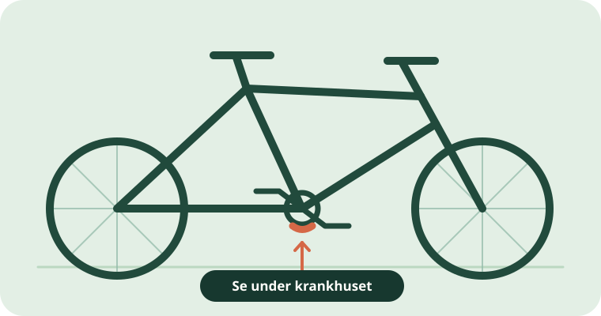

Hvor finner jeg rammenummeret?
Se først under krankhuset, midt mellom pedalene. Nummeret kan også stå andre steder på rammen.
Vanligste sted
Under krankhuset.
Krankhuset er den korte delen av rammen som pedalarmene går gjennom. Se på undersiden av dette røret etter en rekke bokstaver og tall.
Nummeret kan være stemplet i metallet eller stå på en etikett. En QR-kode kan også finnes i nærheten, men se etter selve nummeret i tekst.

Hvis du ikke finner det der
Sjekk flere steder.
Plasseringen varierer mellom merker og modeller. Ikke forveksle et modellnavn eller delenummer med rammenummeret.
- Se på styrerøret foran, der gaffelen møter rammen.
- Se på seterøret eller bakre rammerør nær bakhjulet.
- Se på kjøpsbevis eller i dokumentasjonen fra produsenten.
- Hvis du eier sykkelen, spør butikken eller produsenten om plasseringen for din modell.
Ta vare på det du finner
Fotografer sykkelen og nummeret.
Et oversiktsbilde og et skarpt nærbilde av nummeret gjør det lettere å søke, registrere sykkelen eller dokumentere eierskap.
Ta bare bilder hvis du kan gjøre det uten å flytte eller skade sykkelen. Ikke legg ut nøyaktig plassering eller hele rammenummeret offentlig når du registrerer et funn.